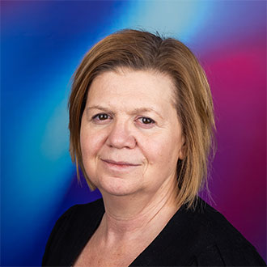
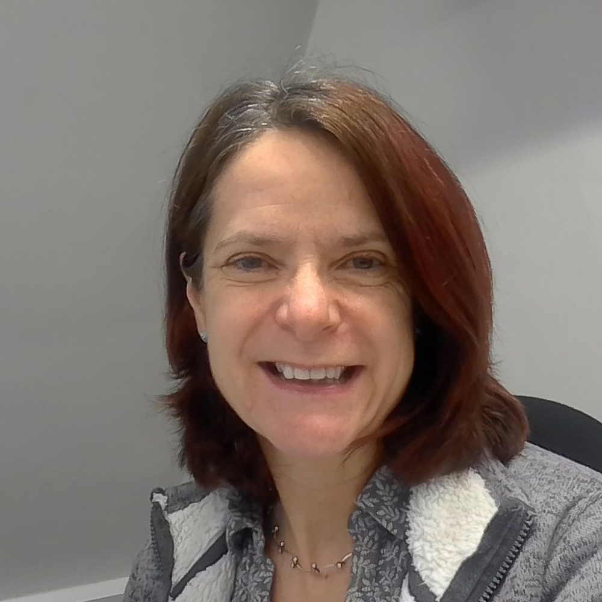

RJRachael Johnson-Duval
Chief Information Officer
Beslist of Eduface "approved tool" wordt. Zorg: adoptie-/ROI-gap + data protection (Copilot = standaard). Win haar = deal. bron: LinkedIn (foto handmatig toe te voegen)

HKProf. Helen King
Director of Learning, Innovation, Development & Skills
Trekt de pilot intern; presenteerde met Eduface bij CHEST. Bezit learning & teaching innovation. Jouw warme ingang. bron: CHEST
 KT
KTKate Thomas
Head of Strategic Projects & Change
Onder Stocks, naast de CIO. Stuurt uitrol/verandertrajecten, relevant voor implementatie-buy-in. bron: LinkedIn (foto handmatig)